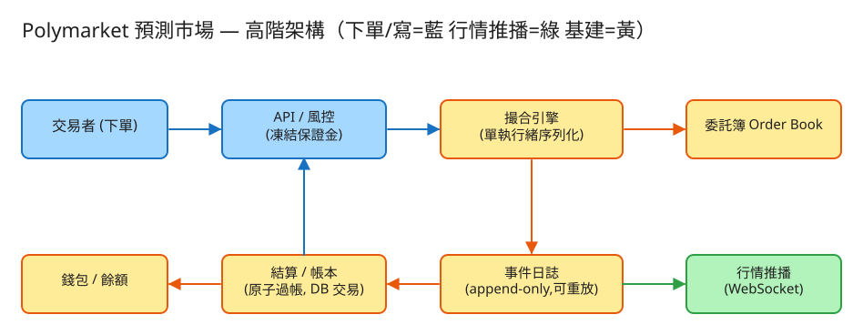

C 一致性/交易 看故事就懂 輕鬆讀 25 分鐘
想像你經營一個線上菜市場，但賣的不是青菜，而是「對未來事件的賭注」。 比如「2028 誰當選總統？」這個攤位上，有人喊「我用 0.62 元買一張『會當選』的票」， 另一個人喊「我用 0.62 元賣一張」——你的工作就是把喊價對得上的買家賣家湊成一筆交易，而且一塊錢都不能算錯。
Polymarket（預測市場）就是在做這件事。它的難，難在兩點：怎麼又快又公平地把買賣單配對，以及錢絕對不能算錯（不能讓人花同一筆錢買兩次、餘額不能變負數）。
很多人第一個疑問是：「未來還沒發生，怎麼能買賣？」關鍵在一個你其實懂的生活經驗——下注。
所以這裡的「價格」其實就是大家心中「這件事會發生的機率」。買 0.62 的人賭它會發生（將來兌 1 元、賺 0.38）；賣的人賭它不會。 每個攤位有兩種票：YES（會發生）和 NO（不會發生），事件結束後由一個公正的「裁判」（叫預言機 oracle）宣布結果，贏的那種票每張兌 1 元，輸的歸零。
💭 停一下：如果一張「YES 票」現在賣 0.9 元，這代表市場覺得這件事很可能還是很不可能發生？
別被「交易所」嚇到。整件事其實就是闖 4 關，一關一關來：
你喊「用 0.62 元買 100 張」，系統第一件事不是馬上成交，而是先把這筆錢扣住、卡在一邊（0.62 × 100 = 62 元）。
👉 為什麼要先凍結？因為如果「掛單時有錢、輪到成交時錢卻被花掉了」，帳就爆了。先卡住錢，就杜絕這種情況——凍結不到，就不准下單。
單子進場後，要去找對手。問題是：同時有一堆人想買、一堆人想賣，誰先成交、用誰的價？
這套規則叫 「價格優先、時間優先」：先比價（買家比誰出得高、賣家比誰開得低），同價再比誰先掛單。 當最高的買價 ≥ 最低的賣價，就配對成交。大單也可以吃掉好幾張小單，沒吃完的部分繼續留在攤位上等（叫「部分成交」）。
⚠️ 關鍵細節：這件事不能讓很多人同時亂搶，否則會出現「兩個買家同時吃掉同一張賣單」的鬼打牆。所以同一個攤位的所有單子，要排成一條隊、一筆一筆處理（後面 Part 2 會講為什麼這樣反而更快又更安全）。
配對成交後，要真的銀貨兩訖：買方付錢拿到票、賣方交票拿到錢。這一步絕對不能做一半。
而且每扣一筆錢都用「有才扣得動」的方式做（餘額夠才扣、不夠就整筆拒絕），這樣餘額永遠不會變成負數，也防止有人拿同一筆錢買兩次（叫「防雙花」）。
事件結束（選舉開票了），由公正裁判預言機宣布結果。贏的那種票每張兌 1 元，輸的歸零。系統按大家手上的持倉，把錢發給贏家。
工程上的「取捨」聽起來很抽象。換個方式記：這個系統最怕三件事，每個設計都是為了避開某個「怕」。

✏️ 用 Excalidraw 開啟編輯（diagram.excalidraw）白話導讀，順著一筆下單的旅程看：
看完上面，這些詞你其實都已經懂了，這裡只是把「工程術語 ↔ 白話」對起來，Part 2 會用到：
| 工程術語 | 白話解釋 |
|---|---|
| order book（委託簿） | 攤位上「所有掛著的買單和賣單」的清單 |
| 撮合（matching） | 把對得上價的買家賣家湊成一筆交易 |
| 價格-時間優先 | 先比價（買高/賣低先），同價先到先成交 |
| maker / taker | 先掛在簿上等的人（maker）/ 主動來吃單的人（taker） |
| 部分成交 | 大單先吃掉幾張對手單，剩下的繼續掛著等 |
| 凍結（hold） | 下單先把錢/票卡住，像刷卡「預授權」 |
| 過帳（settle） | 真正把錢和票交換，「一手交錢一手交貨」 |
| 原子 / ACID | 一整組動作「要嘛全成功、要嘛全取消」，不做一半 |
| 防雙花 / 防超額 | 不准用同一筆錢買兩次、餘額不准變負數 |
| 強一致 | 剛改的資料下一秒一定查得到（錢的事必須這樣） |
| 事件日誌 / 事件溯源 | 永不塗改的流水帳，崩潰可重播、可查帳 |
| 單執行緒序列化 | 同一攤位的單排一條隊、一筆筆處理，不亂搶 |
| 分片（shard） | 不同攤位分給不同機器各自處理，彼此不干擾 |
| 預言機（oracle） | 宣布事件結果的公正裁判 |
| 冪等 | 同一個請求做幾次，結果都一樣（避免重複下單） |
我們估幾個關鍵數字（數字不必背，重點是感受它的「形狀」）：
| 估什麼 | 大概數字 | 所以呢？ |
|---|---|---|
| 一天下多少單（寫） | 熱門事件 ~500 萬單/日，平均每秒約 58 筆，尖峰 ×10 約 580 筆 | 寫入量不算誇張，但不能出錯才是重點 |
| 看行情的人（讀） | 看的人遠多於下單的人，讀:寫可達 100:1 | 看行情要走推播 + 快取，別每次都查帳本 |
| 一個攤位撮合多快 | 純記憶體、一條隊伍可達每秒~10 萬筆 | 單一攤位夠快了，瓶頸不在這 |
| 同時開幾個攤位 | 同時數千個活躍市場 | 不同攤位分給不同機器各管各的 |
💭 停一下：行情（最新價格）每秒有上萬人來看，為什麼不直接讓他們去查那本「真相帳本」？
這題只要記住幾張「點餐單」：
① 下一張單（最重要，撮合的入口）
POST /api/v1/orders
給我：{ 哪個市場, YES還是NO, 買還是賣, 價格0~1, 數量, 我的下單編號 }
我回：201「收到，已成交 40 張，還有 60 張掛著等」那個「我的下單編號（client_order_id）」很關鍵：如果網路不穩、你按了兩次或自動重送，系統靠這個編號認出「這是同一張單」，只算一次，不會幫你重複下單、重複凍結錢。這叫冪等——同個編號做幾次，結果都一樣。
② 撤單（把還沒成交的單收回，退還凍結的錢/票）
DELETE /api/v1/orders/{order_id}③ 看行情（超多人看 → 走推播 + 快取，別狂查帳本）
GET /api/v1/markets/{id}/book → 現在簿上的買價/賣價、各有多少量
WS /ws/markets/{id} → 一有變動就「即時推」給你（不用一直問）為什麼看行情用「推」（WebSocket）而不是「拉」（一直重新整理）？因為上萬人每秒狂問「現在價格多少」會把系統問爆；改成「有變動我才主動推給你」，省事又即時。就像群組有新訊息會跳通知，你不用每秒打開看一次。
④ 查帳戶 / 結算
GET /api/v1/accounts/{id}/balance → 可用現金、凍結中、各持倉
POST /api/v1/markets/{id}/resolve → 裁判宣布結果，開始發錢每個人一列：可用現金、凍結中的現金、持有哪些 YES/NO 票。
這是「錢的真相」，要強一致。每次扣錢都用「有才扣得動」的條件更新——餘額不夠就整筆拒絕，所以永遠不會變負數。
掛單本記每張還沒成交完的單（價格、數量、成交了多少、狀態）；攤位本記每個市場（哪個事件、現在開市還是已結算）。這些是當下的現況，會隨成交一直變。
每筆成交、每個關鍵動作都只增不改地記一筆（append-only）。 這本才是真正的真相來源：撮合引擎在記憶體裡跑得飛快，但萬一崩潰，就把這本流水帳從頭播一遍，現場立刻還原。查帳、對帳、處理糾紛也全靠它。
| 哪裡會塞車 | 怎麼拓寬 |
|---|---|
| 一個攤位的撮合速度到頂 | 它已經很快了（純記憶體、一條隊伍）；可批次寫日誌再加速 |
| 一台機器塞不下幾千個攤位 | 不同市場分到不同機器各管各的（分片），彼此不影響 |
| 結算過帳全打同一本帳本 | 帳戶分片 + 條件更新；成交先記事件，過帳可批次處理 |
| 看行情的人太多，把系統問爆 | 改成推播 + 快取，把「看行情」和「動錢」分開 |
| 引擎崩潰，記憶體狀態全沒了 | 重播事件日誌還原 + 定期存「快照」縮短重播時間 |
「Part 1 的三個怕」是核心取捨。這裡補幾個常被面試官追問的：
讀十遍不如玩一遍。這題有一個真的可以跑的小程式，讓你親眼看到「撮合 + 資金一致」：
# 啟動（在這題的 demo 資料夾裡）
cd demo
php -S localhost:8003 -t public
# 然後瀏覽器打開 http://localhost:8003玩過 demo 了，來掀開引擎蓋看看「那幾關到底是哪幾段程式做的」。 好消息：核心只有三個小檔，剛好對應前面講的工作。不用會 PHP，我把程式翻成白話、只留關鍵那幾行，看註解就懂。
這是菜市場喊價那一關。一張新買單進來，去吃簿上「最便宜、同價先掛」的賣單，能吃多少吃多少，剩下的掛回去等：
function 撮合(新買單) {
把賣單排序：價低的在前、同價先掛的在前 // ← 價格-時間優先
剩餘 = 新買單.數量
for (每一張賣單 in 賣簿) {
if (賣單.價格 > 新買單.出價) break; // ← 最便宜的都比我出價貴 → 收手
成交量 = min(剩餘, 賣單.數量)
記一筆成交{ 成交價 = 賣單.價格, // ← 成交價用「先掛的那張(maker)」的價
量 = 成交量, 買方, 賣方 }
剩餘 -= 成交量
賣單.數量 -= 成交量 // 這張被吃掉一部分
}
清掉數量歸零的賣單
if (剩餘 > 0) 把剩餘掛回買簿 // ← 沒吃完 → 部分成交，繼續掛著等
return 這次的成交清單
}排序那兩行就是「誰出得高/開得低誰先，同價先到先」；break 那行是「最便宜的都比我貴就收手」。成交價刻意取簿上先掛那張（maker）的價，所以主動來吃單的人有時拿到比自己出價更好的價——多凍結的錢稍後會退。這段是純算簿、完全不碰錢，職責分得很乾淨。
下買單前，先把錢卡住（刷卡預授權）。關鍵是用「有才扣得動」的條件判斷——不夠就整筆拒絕，所以餘額永遠不會變負數：
function 凍結保證金(使用者, 金額) {
if (可用餘額 < 金額) return false; // ← 條件不成立 → 拒絕(防超額)，不進簿、不撮合
可用餘額 -= 金額 // 從「可用」搬到「凍結」
凍結中 += 金額
return true
}
// 賣單同理：freezeShares() 先把要賣的「票」卡住 → 防雙花就這一行 if，把「餘額不足」「同一筆錢想花兩次」全擋在門外。對應到真實 DB 就是一句條件更新 UPDATE … SET available=available-N WHERE available >= N——受影響列數 = 0 就代表錢不夠，邏輯一模一樣。
成交時則要一手交錢一手交貨，買賣雙方一次到位（要嘛全成、要嘛全不動）：
function 成交過帳(買方, 賣方, 量, 成交價) {
成本 = 量 × 成交價
買方.凍結中 -= 成本; 買方.持票 += 量 // 買方：扣掉預授權的錢、拿到票
賣方.持票 -= 量; 賣方.可用 += 成本 // 賣方：交出票、收到錢
} // ← 這整段在「同一把鎖(＝同一個交易)」內完成，全成或全不動四行加減必須綁成一個不可分割的動作（ACID 原子性）：絕不會「買方錢扣了、票卻沒到手」。demo 用一把檔案鎖模擬「一個 DB 交易」，真實系統換成 BEGIN … COMMIT，原子過帳的邏輯不變。
這是全題的心臟。它把上面兩個幫手串起來，而且關鍵在整段下單在「一條隊伍」裡一筆筆做，不讓人同時搶：
function 下單(使用者, 買賣, 價格, 數量) {
搶到全域鎖(); // ← 一次只處理一筆單(單執行緒序列化)，防搶單打架
try {
// 1) 先凍結 → 凍不到就直接拒，不進簿、不撮合
if (買) { if (!凍結保證金(使用者, 價格×數量)) return 拒絕「餘額不足」 }
else { if (!凍結票(使用者, 數量)) return 拒絕「持倉不足」 }
記事件('ORDER_PLACED', 這張單) // ← 每個動作都寫進永不塗改的流水帳
成交清單 = OrderBook.撮合(這張單) // 2) 純算簿，產生成交
for (每筆成交 in 成交清單) {
Ledger.成交過帳(...) // 3) 逐筆原子過帳
記事件('TRADE_EXECUTED', 成交)
if (成交價 比我出價便宜) 退回多凍結的錢 // ← 拿到更好的價 → 退差額
}
把委託簿寫回硬碟 // 4) 含剩餘掛單，跨請求也記得
} finally { 放開全域鎖() }
}順序不能換：一定是先凍結（防超額）→ 再撮合 → 再原子過帳。「搶到全域鎖 / 放開鎖」那兩行，就是前面說的「同一攤位排一條隊、一筆筆認真處理」；中間每步都 記事件()，崩潰時把流水帳重播一遍就能還原。三個幫手在這裡合體，一題的精華全在這段。
💭 停一下：為什麼是「先凍結錢，才去撮合」？反過來先撮合再扣錢不行嗎？
| 關卡（前面講的） | 哪個檔 | 關鍵那段 |
|---|---|---|
| ① 下單先凍結錢 | Ledger | 凍結保證金() 的那行 if（有才扣得動） |
| ② 喊價配對撮合 | OrderBook | 撮合()（價格-時間優先 + 部分成交） |
| ③ 一手交錢一手交貨 | Ledger | 成交過帳()（同一交易內原子完成） |
| 排隊不亂搶 + 可重播 | MatchingEngine | 全域鎖 + 每步 記事件() |
👉 重點：真實系統會把「JSON 檔 + 檔案鎖 + 迴圈撮合」換成「專業撮合引擎 + 關聯式 DB 交易（BEGIN…COMMIT）+ 事件串流」， 但上面這幾段判斷邏輯一字都不用改：撮合照樣價格-時間優先、資金照樣「先凍結→原子過帳→有才扣得動」。所以讀懂這個小 demo，你就讀懂了這題的核心。
先不要看答案，自己用講給朋友聽的方式回答看看（講得出來才是真的懂）：
預測市場 = 喊價配對的交易所 + 絕不出錯的帳本。價格就是大家心中的「機率」。
4 個關卡：① 下單先凍結錢（刷卡預授權）→ ② 喊價配對撮合（菜市場，價格-時間優先）→ ③ 一手交錢一手交貨原子過帳 → ④ 事件揭曉結算發錢。
3 個怕：怕錢算錯（正確性壓倒一切、強一致）、怕同時搶單打架（一條隊伍一筆筆處理）、怕崩潰丟帳（永不塗改的流水帳可重播）。
工程細節一句話：讀多寫少 → 看行情走推播+快取、別查真相帳本；撮合按市場分片各跑一條隊伍；資金用「先凍結 → 原子過帳 → 有才扣得動」防超額防雙花；一切先記事件日誌，崩潰可重播、可審計。
想看更精簡、面試速查用的版本？👉 前往完整版（同樣內容的工程速查格式）。